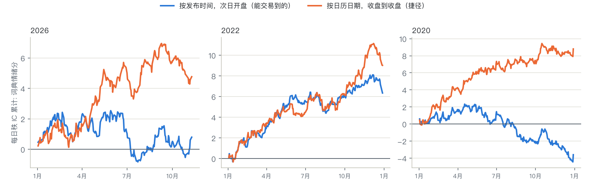
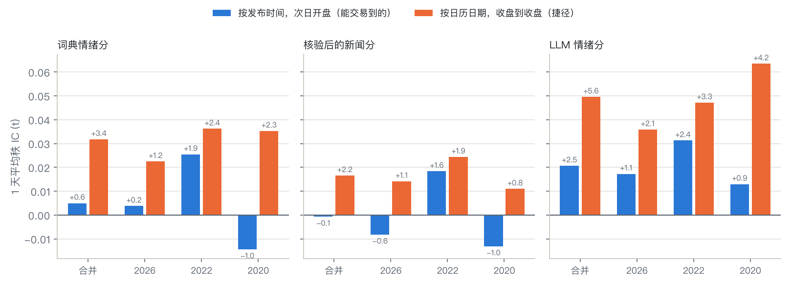
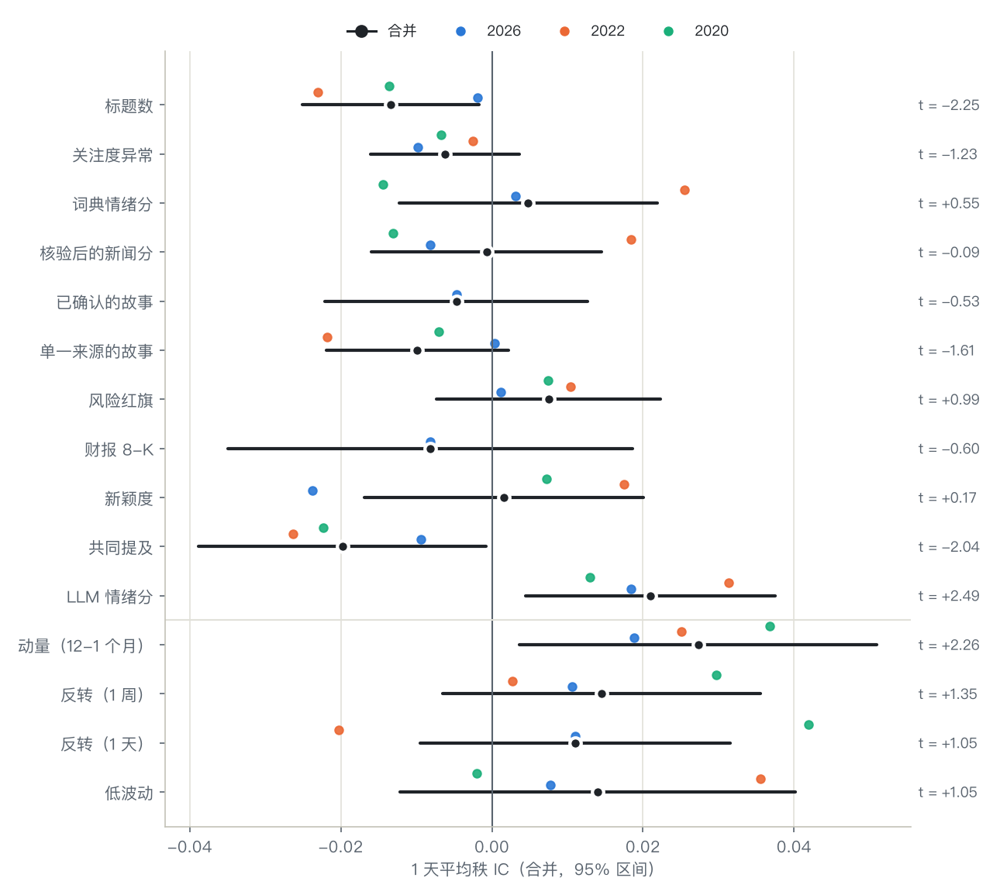
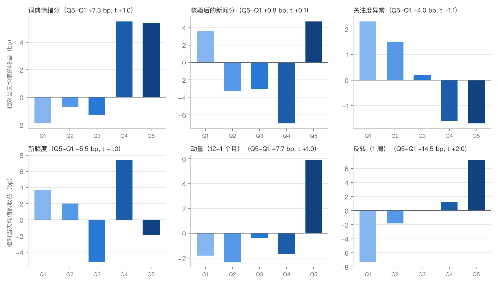
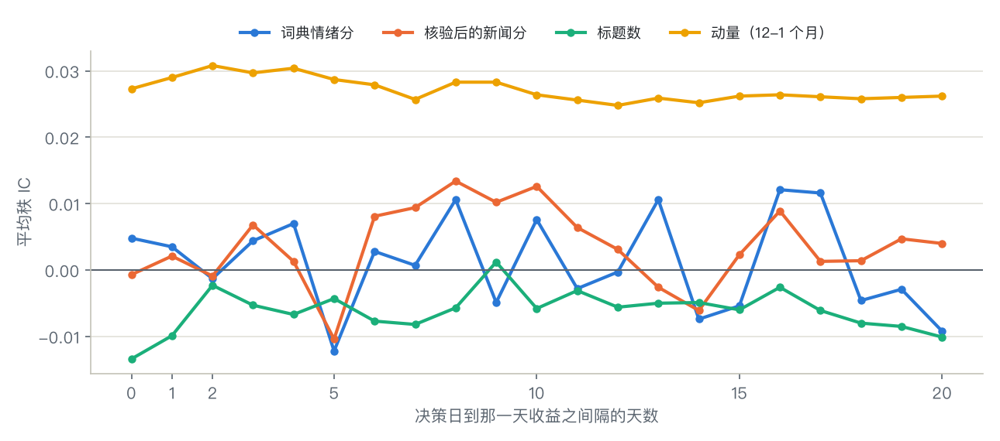

首页 › 指南
新闻标题能预测股价吗？按时间点检验十个新闻因子
我们把三个冻结时段的新闻标题做成 64 只美国大盘股的十个每日新闻因子，每天只用收盘前已经发布的新闻，再用次日开盘起算的收益在 2020、2022、2026 年分别检验。结果没有一个站得住，连语言模型打的情绪分也不例外。如果像很多新闻回测那样按日历日期把新闻对齐到价格，标题情绪看起来就像一个真因子。
没有一个新闻因子站得住。十个里八个是噪音。另外两个（标题数，以及标题里同时点名的其他公司数）1 天 IC 小而为负，加入动量、反转和低波动后就被吸收了。
语言模型读标题读得更好，但还不够好。用 gpt-5.6-luna 打的情绪分 1 天 IC 0.021（t = 2.5），三年都为正，但会被价格因子吸收，而且变得太快，交易不了。
按日历日期对齐会凭空造出一个因子。词典情绪分按日历日期对齐、收盘到收盘检验：秩 IC 0.032（t = 3.4），多空每天 36.9 bp。按发布时间对齐、从次日开盘交易：0.005（t = 0.6）和 7.4 bp。
差距大多是提前读到的。其中三分之二，即 IC +0.018（t = 4.8），来自收盘后才发布的新闻，三年里每一年都有。
按日期对齐，因子就出现了
拿一个因子，即一只股票当天标题的词典情绪分均值，算两遍。按发布时间对齐，一条标题从它发布之后的第一个收盘起才算数，交易在次日开盘：这是交易员真正能做到的。按日历日期对齐，16:05 发布的标题会落到当天 16:00 收盘那一行，收盘到收盘的收益在这条标题出现之前就开始算了。
| 词典情绪分，1 天，2020 + 2022 + 2026 | 秩 IC（t） | 每天多空 |
|---|---|---|
| 按发布时间，从次日开盘算起（能交易到的） | 0.005 (0.6) | 7.4 bp |
| 按发布时间，收盘到收盘 | 0.014 (1.5) | 7.8 bp |
| 按日历日期，收盘到收盘（捷径） | 0.032 (3.4) | 36.9 bp |
| 按日历日期，从次日开盘算起 | 0.004 (0.4) | 5.6 bp |
只有捷径读到了未来。收益区间固定为收盘到收盘时，按日历日期对齐让 IC 多出 +0.018（t = 4.8），占和诚实回放之间差距的三分之二。按日历日期对齐、从次日开盘算起不会漏，因为晚上的新闻在次日开盘前已经发布，而它并不比诚实回放好：捷径的优势就是收盘后新闻带来的隔夜涨跌。

这不是某一年运气好。漏洞在 2026 年是 +0.0157（t = 1.8），2022 年 +0.0209（t = 3.7），2020 年 +0.0165（t = 3.1）；本包的核验后新闻分也一样：按日期对齐 0.017（t = 2.2），按时间对齐 -0.001（t = -0.1）。语言模型的情绪分也一样，而且更明显：按日期对齐 0.050（t = 5.6），按时间对齐 0.021（t = 2.45）。

挪动了多少：按日历日期对齐，会把 2026 年 13% 的标题和 62.5% 的 SEC 8-K 文件（公司多在收盘后发布）放到比发布时间所允许的更早的交易日；2020 和 2022 年是 10% 到 11% 的标题。
三个市场里的十个新闻因子
每天在 64 只股票之间给每个因子排序，和从次日开盘到 1、5、20 个交易日后开盘的全收益比较。t 值用 Newey-West，控制的价格因子是 12-1 个月动量、1 周和 1 天反转、60 天低波动。

| 因子 | 结论 | IC，1 天（t） | IC，5 天（t） | 控制价格因子后（t） |
|---|---|---|---|---|
| LLM 情绪分（gpt-5.6-luna） | 弱 | +0.021 (+2.49) | +0.023 (+2.06) | +1.09 |
| 标题数 | 弱 | -0.013 (-2.25) | -0.010 (-1.00) | -1.01 |
| 共同提及 | 弱 | -0.020 (-2.04) | -0.018 (-1.40) | -1.28 |
| 关注度异常 | 噪音 | -0.006 (-1.23) | +0.004 (+0.58) | -0.31 |
| 词典情绪分 | 噪音 | +0.005 (+0.55) | +0.009 (+0.83) | -0.17 |
| 核验后的新闻分 | 噪音 | -0.001 (-0.09) | -0.001 (-0.08) | -1.05 |
| 已确认的故事（2026） | 噪音 | -0.005 (-0.53) | +0.003 (+0.25) | -0.31 |
| 单一来源的故事 | 噪音 | -0.010 (-1.61) | -0.008 (-0.71) | -0.44 |
| 风险红旗 | 噪音 | +0.008 (+0.99) | +0.002 (+0.16) | +0.82 |
| 财报 8-K（2026） | 噪音 | -0.008 (-0.60) | -0.010 (-0.77) | +0.14 |
| 新颖度 | 噪音 | +0.002 (+0.17) | +0.005 (+0.41) | -0.34 |
| 动量 12-1（价格因子，作参照） | +0.027 (+2.26) | +0.034 (+1.67) |
有用 = 1 天或 5 天的合并 |t| 至少 2，每年符号一致，控制价格因子后 |t| 仍至少 2（表中是 Fama-MacBeth 斜率的 t 值）。已确认的故事和财报 8-K 只有 2026 年有：2020 和 2022 年的标题只有一个来源，也没有 SEC 文件，那两年没有故事能被确认。
- 语言模型的情绪分是最强的新闻因子，但仍然是弱。它的 IC 每年都为正（2022 年 0.031，t = 2.4），控制价格因子后 5 天残差 IC 是 0.027（t = 3.4）；但加入价格因子后的 Fama-MacBeth 斜率，1 天 t 只有 1.1，5 天 1.9。值得用更多数据再看，还不是能交易的因子。
- 词典情绪延续不到次日开盘。词典情绪分在 2022 年熊市里最接近显著（0.026，t = 1.9），到 2020 年却变成负的。
- 新闻多，次日略差，但这是价格的事。标题多的股票就是当天大涨大跌的股票；回归里加入反转和其他价格因子后，效应不再显著。
- 分市场状态也没找到可靠的东西。约 36 个分市场状态的读数里，有三个 |t| 刚过 2，和随机能给出的差不多。
五分组、衰减和换手

标题情绪最高一组比最低一组每天多 7.3 bp（t = 1.0），和随机波动分不开。这个因子最高一组每天要换掉 85%，所以每边成本 2.2 bp 就把价差扣完了，比本包默认的 5 bp 滑点还低。语言模型的情绪分稍好一点，每天 8.9 bp（t = 1.5），但变得一样快（最高一组每天换掉 82%），每边成本 2.7 bp 就扣完了。作为对比，动量的最高一组每天保留 94%。

新闻因子的衰减曲线从第一天起就在零附近来回摆；动量的曲线一个月里都平稳地为正。
这些因子
- 上一个收盘以来的标题数，以及关注度异常：这个数和这只股票之前 20 个交易日自身均值的比较。
- 词典情绪分：用本包的金融词典给当天标题打分取均值，不算观点文章。
- 核验后的新闻分、已确认和单一来源的故事、风险红旗：交易智能体读到的 72 小时新闻报告，故事按谁在报道来聚类和分级。
- 财报 8-K：上一个收盘以来带 Item 2.02 的 SEC 文件（2026 年）。
- 新颖度：当天标题和之前 5 天重复得有多少。
- 共同提及：当天标题还点名了几家其他覆盖的公司。
- LLM 情绪分（可选）：语言模型给当天每条标题打的 -1 到 1 分的均值；这里用的是 gpt-5.6-luna，temperature 0，62,722 条标题各打一次分并缓存。
某一天的每个值只用当天收盘（纽约时间 16:00，提前收盘日 13:00）之前发布的新闻。有一个测试会改写某个收盘及之后发布的每条标题、再加几条新标题，检查那个收盘及之前的特征一个都不变。
自己跑一遍
pip install risk-aware-trading-agents # Python 3.10+ riskaware research factors # 三年全跑，约 80 秒 riskaware research factors --period 2022 # 只跑一年 riskaware research factors --llm # 加一个由本地 LLM 打分的情绪因子（Ollama，免费）
运行会把 factors.json（全部数字）、factors.md、本页的图和每日 IC 写进一个文件夹。加 --llm 时，你选的模型给每条标题打 -1 到 1 分，分数会缓存，每条只打一次；命令先打印 token 估计，付费模型开跑前会先问你。详见 docs/zh/news-factors.md。
局限
这是 64 只美国最大的股票，报道多、定价快；新闻对小盘股可能更重要。新闻只有标题，来自一个新闻源，2026 年另有 SEC 8-K 文件。决策每天收盘后做一次，所以对标题更快的反应超出了日线能检验的范围。每个市场只有一年，时间短：IC 0.01 需要好几年才能和 0 分开。
常见问题
新闻情绪能预测股票收益吗？
在这次检验里不能。收盘前发布的标题的词典情绪分，对次日开盘起算收益的 1 天秩 IC 是 0.005（t = 0.6）；控制价格因子之后，十个新闻因子没有一个站得住。
按日历日期对齐会把新闻因子虚增多少？
对标题情绪，IC 从 0.005 变成 0.032，多空价差从每天 7.4 bp 变成 36.9 bp。差距的三分之二，即 IC +0.018（t = 4.8），来自收盘后才发布的标题。
我能自己跑这个新闻因子检验吗？
能，但需要你自己的各时段标题文件，放在 ~/.riskaware/news/periods：价格在安装包里，新闻标题不再分发。riskaware research factors 不用 API key。
能用语言模型给标题打分吗？
能。--llm 用本地 Ollama 模型免费给每条标题打分，或者在显示 token 估计后调用付费 API，并把 LLM 情绪因子加进同样的检验；也可以用 --llm-export 和 --llm-import 交给任何批量接口去打分。用 gpt-5.6-luna 打分，它是本页最强的新闻因子（1 天 IC 0.021，t = 2.5，三年都为正），但仍然会被价格因子吸收。2020 或 2022 年之后训练的模型可能知道后来发生了什么，所以它对那两年的打分不是盲的；luna 的 IC 在 2020 年最低，这让人稍微放心，但不是证明。